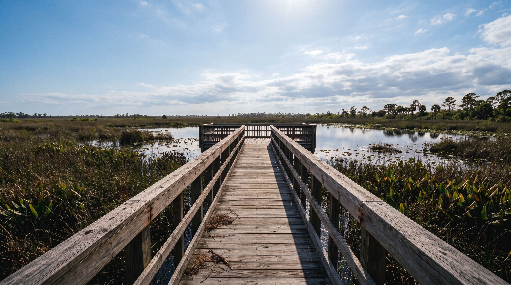

Giving is easy. Knowing where is not.
We check every charity ourselves. Seven causes, thirteen partners, and all of your gift reaches the one you choose.
A channel for light
Every dollar that arrives here leaves here.
Adonai’s Way is a grant-making foundation. It runs no programmes, employs nobody in the field and builds nothing of its own. Its whole job is choosing well, and then getting out of the way of the work.
Adonai means Lord, and a way is the passage between. That is all this is: money in, money out, and a written reason for every decision before the money moves.
Seven causes, thirteen charities. Each one was chosen after our own due diligence, and each is named on this page with a link so you can judge it yourself.
Choose a cause. The hard part is already done.
Behind each cause are the charities that came through our diligence: registration confirmed, three years of accounts read, programme evidence tested, safeguarding checked.
Every charity here was read and chosen by the foundation, and every name links to its own site so you can judge it yourself.
We read the accounts before the money moves.
Most foundations tell you where the money went. We can tell you why it went there, who looked, and what would have stopped it.
Authentic, reliable, trustworthy. That we donate while ensuring the quality and integrity of our partners through our own due diligence.Margaux Primat, Founder
Referral and shortlist
A charity reaches us through a partner, a beneficiary or our own search. We place it against one of the seven causes, and against what that cause still needs.
Registration and accounts
Registered status confirmed with the regulator in its own country. Three years of filed accounts read in full: reserves, income concentration, cost ratios.
Programme evidence
What they actually do, who they reach, and what changed as a result. We ask for the numbers behind the story, and we speak to people the charity did not choose for us.
Governance and safeguarding
Board composition, conflicts of interest, safeguarding policy and its record. A charity that cannot show us this is not funded, however good the work looks.
Decision, then review
Every funded partner is reviewed each year against what they told us. Continued funding is earned rather than assumed, and we say so before the first grant.
Where the money goes.
No grant has been made yet, so there are no results to show and we will not dress a projection up as one. These are the terms we are bound to, and the date each becomes something you can check.
Whatever has happened in a person’s life, the situation can be turned around.Margaux Primat, Founder
Three of the charities you would be funding.
One from each of three causes. The other ten are in the index above.
- Founded2026
- ModelGrant-making only
- CausesSeven
- RegistrationPending
A foundation that gives, and shows its working.
The difficulty in giving is not generosity. It is knowing. Most people who want to help cannot tell a good charity from a well-marketed one, and have no time to find out.
So the foundation does the finding out. Reading the accounts, testing the evidence, meeting the people, and funding the ones that hold up.
How we work
Money in, money out, and nothing taken along the way that is not disclosed. Grants are made against the seven causes, partners are reviewed every year, and the reasoning is written down before the grant, not after.
What we fund
Homelessness, and the dignity that follows a door you can close. Children’s education. Brain and neurological research. Veterans. Survivors of trauma and abuse. Psychedelic research, held to the same evidential standard as any other medicine. Animals and conservation, for the creatures and coastlines that cannot brief a lawyer. Seven causes, each chosen because funding moves the needle further there than it does elsewhere.
Governance
Registered status, structure, trustee details and the flow of funds are published here in full once registration is confirmed. Solicitation disclosures appear in the footer of every page.
Governance detail pending registration
Donor, partner or press.
- hello@adonaisway.org
- Partnerships
- partners@adonaisway.org
- Press
- press@adonaisway.org
- Postal address
- Pending, required for solicitation disclosure
Give
You choose the cause. We have already chosen the charity.
Nothing here is passed on that we would not fund ourselves.
Choose a causeYour gift comes to the foundation and goes out to the charity you chose. The founder meets the running costs separately, so the whole of it travels. Giving opens once charitable registration is confirmed, and the ways to give will be listed here.